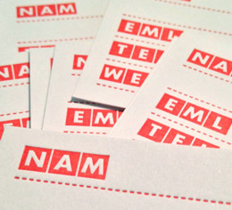

|
Q2: Travelling Circus
02013-Q2 Reykjavik, ICELAND: We've been on the road for more than half of this quarter. Mostly for conferences, meetings and research. We're glad to be back in Iceland and focusing on Q3.
|
|
Japan Trip
We spent three weeks touring around Japan, building-up a network of connections and scouting some suppliers. The trip was amazing and eye-opening.
Strangest Food: Cooked Jellyfish
Biggest Delight: 300+ km/h Shinkansen bullet train
One of the most interesting and fascinating items we found was Teradamokei. Viewing and building the world at 1/100th the size out of paper.
|
|
|
|
|
Krakow, Poland Trip
We were in Poland for MMConf earlier this quarter. It was a great two-conference about mobile technologies. Our contribution was all about all the types of sensors in our devices and what that means for the near-future.
Biggest Surprise: Amazing tech scene
|
|
Little Printer Hackday
Back in May we hosted a Little Printer Hack Day here in Iceland. A handful of us got together to program some interesting publications.
A big thanks to the Berg London team for loaning us a Little Printer for the week to test and demonstrate an example of an actual Internet Of Things thing.
Hopefully we can release some of the interesting publications soon, pending client approval. Stay tuned!
Read more about Little Printer
|
|
Contest Winner
Q2's Blank Business Card winner was Allen from Albuquerque. The randomly chosen co-ordinates where Lat: -23.331 Lon: -56.152 over 8000km away.

02013 is the second anniversary of (optional.is) so the theme all year is paper. This quarter we'll be giving away a set of 20 postcards to report on your summer travels.
Next winner announced September 1st. You can't win, if you don't enter!.
|
|
A Map of the World: The World According to Illustrators and Storytellers
We work closely with Borgarmynd and they were invited to submit some of their designs for a new Gestalten book all about maps. The two that made it into the book were the Reykjavik Center map and the San Francisco TOC map.
The book is 224 pages of beautiful maps from designers all over the world. It is an honor to make it into the book and be besides so many incredible designs. If you like maps, you shouldn't hesitate to buy this book.
Order your copy online
|
|
|